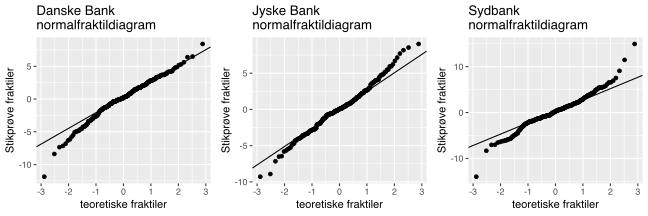
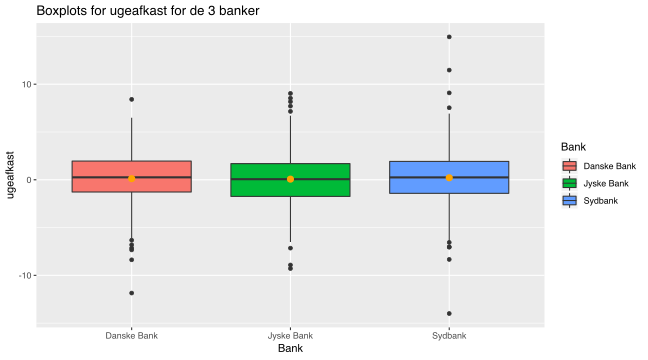

Kapitel 3 ANOVA
ANOVA er en metode til at sammenligne middelværdierne for mere end to kvantitative variable. Skal man sammenligne to middelværdier med varianshomogenitet, benytter man pooled t-test, er der mere end 2 middelværdier benyttes ANOVA F-test . Forudsætningerne for at benytte testen er at populationerne er normalfordelte og har samme varians.
ANOVA er en forkortelse af analysis of variances, man tester om middelværdierne er ens vha. varianserne. Vi undersøger om k populationer har samme middelværdi, hypoteserne bliver:
\[H_0:\mu_1=\mu_2=...=\mu_k\]\[H_1:Ikke\ alle\ middelvæ\ rdier\ er\ ens.\]
Den totale variation SST kan opdeles i SSW og SSA hvor, SSW er variationen indenfor de k grupper, SSA er variationen mellem grupperne.
Hvis variationen indenfor grupperne SSW er lille i forhold til variationen mellem grupperne SSA, er middelværdierne ikke ens.
Herunder er et eksempel, hvor populationerne er dagsafkast for aktier, variationen indenfor grupperne SSW er lille i forhold til variationen mellem grupperne SSA, derfor er middelværdierne signifikant forskellige.
Herunder er en figur med dagsafkast for aktier, hvor variationen indenfor grupperne SSW er stor i forhold til variationen mellem grupperne SSA, derfor er middelværdierne ikke signifikant forskellige.
Herunder er et eksempel hvor forudsætningen om varianshomogenitet ikke er opfyldt, de 3 aktier har forskelligt variation.
Et forsikringsselskab har udviklet 4 forskellige layouts til information om skadesdækning. Brugerne udsættes vilkårligt for et af de 4 layouts, selskabet registrerer tiderne for besøgene på hjemmesiderne for at afgøre hvilket design, der er optimalt mht. brugervenlighed og overskuelighed.
Hent datasættet Hjemmesidedesigns besøgstider i millisekunder, der viser de 359 observede besøgstider på de 4 hjemmesider.
Forsikringsselskabet ønsker at undersøge om der er forskel på besøgstiderne, vi opstiller hypoteserne:
\[H_0:\mu_{Design 1}=\mu_{Design 2}=\mu_{Design 3}=\mu_{Design 4}\]\[H_1:Ikke\ alle\ middelvæ\ rdier\ er\ ens\ for\ de\ 4\ designs.\]
Freestat output

Vi får en F-teststørrelse på 6.0429, der resulterer i en p-værdi på 0.0005, hvilket er under signifikansniveauet på 0.05. Vi kan forkaster altså nulhypotesen om ens middelværdier.
Freestat output

Vi skal tjekke forudsætningen om varianshomogenitet
\[H_0:\sigma_{Design 1}=\sigma_{Design 2}=\sigma_{Design 3}=\sigma_{Design 4}\]\[H_1:Ikke\ alle\ varianser\ er\ ens\ for\ de\ 4\ designs.\]
Vi får en teststørrelse på 1.4742741. Chi i anden testet giver os en p-værdi på 0.6882205, hvilket er større end signifikanssandsynligheden på 0.05, vi kan ikke afvise nulhypotesen. Varianserne er ens, så forudsætningen er opfyldt.
Freestat output af Bartlett test for varianshomogenitet

Normalitet
Herunder er 4 normalfraktildiagrammer, for de 4 designs, vi kan godt antage, stikprøverne stammer fra normalfordelte populationer.
Tukey Kramer
Vi kan undersøge hvilke designs der har de største afvigelser ved at se på forskellene mellem stikprøvegennemsnittene, der er størst forskel mellem besøgstiderne for design 1 og design 4.

Vi kan grafisk sammenligne middelværdierne i boxplots, her ser vi ligeledes forskellen er størst mellem design 1 og design 4. Middelværdierne er markeret med orange prikker.
Spørgsmål 3 banker afkast
Hent datasættet 3 Danske Banker Ugeafkast i procent , i dette datasæt er de seneste 239 ugers afkast i procent for hhv. Danske Bank, Jyske Bank og Sydbank. Er der signifikant forskel på afkastene på de 3 bankaktier?
Svar 3 banker afkast
Vi opstiller hypoteserne for test af om middelværdierne er identiske:
\[H_0:\mu_{Danske Bank}=\mu_{Jyske Bank}=\mu_{Sydbank}\]\[H_1:Ikke\ alle\ middelvæ\ rdier\ er\ ens\ for\ de\ 3\ banker\]
Vi får variationen i grupperne SSW til 296772869957.892 og variationen mellem grupperne SSA til 15155248763.2056. Dette giver en F-teststørrelse på 6.0429 der resulterer i p-værdi på 0.0005. Vi kan altså ikke forkaste altså nulhypotesen om ens middelværdier.
Vi kan da også se at de absolutte forskelle mellem stikprøvegennemsnittene er relativt små:
| Forskelle mellem Banker | Absolutte forskelle |
|---|---|
| Danske Bank - Jyske Bank | 0.12 |
| Danske Bank - Sydbank | 0.04 |
| Jyske Bank - Sydbank | 0.17 |
Vi skal tjekke forudsætningen om varianshomogenitet
\[H_0:\sigma_{Danske Bank}=\sigma_{Jyske Bank}=\sigma_{Sydbank}\]\[H_1:Ikke\ alle\ varianser\ er\ ens\ for\ de\ 3\ banker.\]
Vi får en teststørrelse på 8.52099. Chi i anden testet giver os en p-værdi på 0.0141153, hvilket er mindre end signifikanssandsynligheden på 0.05, vi afviser nulhypotesen. Varianserne er ikke ens, så forudsætningen er ikke opfyldt. Vi kan således have problemer med kvaliteten af analysen.
Normalitet

Vi kan grafisk sammenligne middelværdierne for ugeafkastet for de 3 banker i boxplots , her ser vi der ikke er stor forskel på middelværdierne. Middelværdierne er markeret med orange prikker.
Spørgsmål IMDB
Hent IMDB data, der viser data for 759 film simpelt tilfældigt udtrukket af en database med 759 film. Vi ønsker at se om, der er forskel på vurderingen af de forskellige genrer action, komedie, drama, documentar, romance og short, undersøg dette vha. ANOVA test
Svar IMDB
Vi opstiller hypoteserne:
\[H_0:\mu_{action}=\mu_{komedie}=\mu_{drama}=\mu_{documentar}=\mu_{romance}=\mu_{short}\]\[H_1:Ikke\ alle\ middelvæ\ rdier\ er\ ens\ for\ de\ 5\ genrer.\]
Vi får en F-teststørrelse på 10.786, der resulterer i en meget lille p-værdi på 0, hvilket er klart under signifikansniveauet på 0.05. Vi kan forkaster altså nulhypotesen om ens middelværdier.
Vi skal tjekke forudsætningen om varianshomogenitet
\[H_0:\sigma_{action}=\sigma_{komedie}=\sigma_{drama}=\sigma_{documentar}=\sigma_{romance}=\sigma_{short}\]\[H_1:Ikke\ alle\ standardafvigelser\ er\ ens\ for\ de\ 5\ genrer.\]
Vi får en teststørrelse på 7.1306596. Chi i anden testet giver os en p-værdi på 0.2111029.
Normalitet
Herunder er 5 normalfraktildiagrammer, for de 5 genrer, dokumentar og short genrerne ser ikke normalfordelte ud. Hvilket kan give problemer med kvaliteten i vor analyse.
Vi kan ud fra boxplots se at dokumentarfilm rates højt i modsætning til actionfilm. Vi kan i tabellen herunder se hvor de største forskelle er mellem genrerne.
| Forskelle gennemsnit genrer | Absolutte forskelle |
|---|---|
| Action - dokumentar | 1.5465517 |
| Action - drama | 0.9324561 |
| Action - komedie | 0.3148402 |
| Action - romance | 0.6735294 |
| Action - short | 0.788806 |
| Dokumentar - drama | 0.6140956 |
| Dokumentar - komedie | 1.2317115 |
| Dokumentar - romance | 0.8730223 |
| Dokumentar - short | 0.7577458 |
| Drama - komedie | 0.617616 |
| Drama - romance | 0.2589267 |
| Drama - short | 0.1436502 |
| Komedie - romance | 0.3586892 |
| Komedie - short | 0.4739658 |
| Romance - short | 0.1152766 |